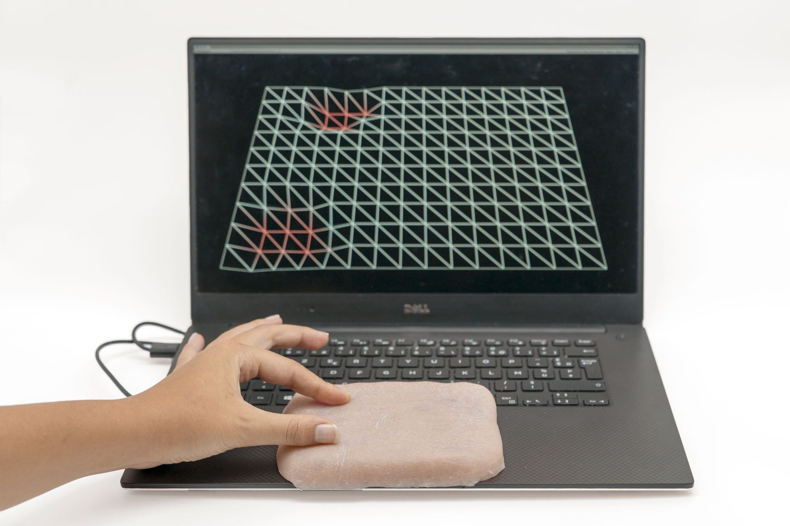

Capacitive Matrix Control
Currently working on a capacitive matrix controlled by FPGA for tangible interfaces.
Engineering student specializing in Creative Technology at the Institute for Future Technologies (IFT). I focus on conducting scientific research and developing technological projects in AI, HCI, biomaterials, and advanced electronics.
Currently in the 1st year of the Creative Technology major. Conducting scientific research and developing projects in AI, HCI, biomaterials, and advanced electronics.
Completed the first three years of general engineering. Developed skills in coding, mechanical design, teamwork, prototyping, and electronics.
Primary financial responsibility for dozens of tables per day. Maintained high service standards under high pressure.
Initial technical approach to cybersecurity and araulics. Developed team-working skills. Analysis and implementation of security protocols. Discovered the startup environment.
Event management for 3 schools. Organized major events (3,000 people) with celebrity guests. Logistical and budgetary planning.
Developed pedagogical and communication skills. Autonomous management: organization and progress monitoring.
Ensured the safety of hundreds of daily vacationers. Stress management and rapid decision-making in case of risk.
Learned rigor and excellence within a prestigious establishment. Adapted to high demands of international clientele.
Specialization in Math, Physics-Chemistry, and Engineering Science. Graduated with High Honors.
Currently working on a capacitive matrix controlled by FPGA for tangible interfaces.
First steps in AI: MNIST digit recognition model deployed on web.
View ProjectWebsite to analyze and compare research papers using LLM integration with RAG.
View ProjectDevelopment of a medical octopod robot and a complete mechanical ornithopter mimicking bird flight.
Designed "The Extra Pocket", a belt-attachable pocket made from leather cut-offs to provide more space.
Feel free to contact me if you have any questions or opportunities. I am currently seeking a 4-month internship.
valentin.bernadet@edu.devinci.fr
Download my CV